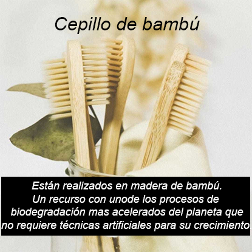
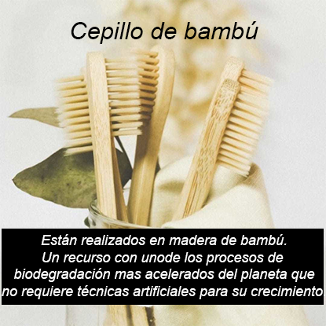
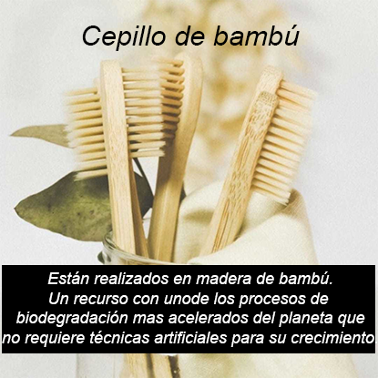

La cosmética consciente es aquella que escucha lo que necesita la piel y lo que va más allá. Ponemos conciencia en realizar productos respetuosos con tu piel y con la madre tierra. La naturaleza nos ofrece todo lo que necesitamos, por ello aprovechamos su abundancia para elaborar productos con ingredientes naturales. Trabajamos con nuestras manos. Es la manera de conectar nuestra esencia con la materia prima. Todo el proceso se realiza de forma tradicional, sin maquinaria industrial. Nuestra visión tiende a una concepción vegana. La base de nuestros productos es de origen vegetal: arcillas, plantas, aceites, ceras vegetales, semillas, etc. Los ingredientes que utilizamos son ecológicos para no ensuciar al organismo con sustancias nocivas y así no permitir que sigan maltratando nuestra madre tierra. La línea de nuestros productos tiende a una concepción de residuo cero, por lo que hemos eliminado la mayoría de los envases, dando lugar a productos cosméticos sólidos. Nos gusta poner todo nuestro cariño en lo que hacemos, cuidando al máximo cada parte del proceso y cada pequeño detalle. Nos gusta que nuestros productos transmitan este cuidado y este amor por lo que hacemos.
